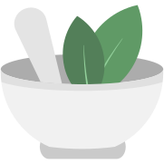

TÓPICO 1
PRÁTICAS INTEGRATIVAS EM SAÚDE: CONCEITOS, CUIDADO E RESULTADOS
TÓPICO 1
PRÁTICAS INTEGRATIVAS EM SAÚDE: CONCEITOS, CUIDADO E RESULTADOS
Uma diferenciação importante no contexto das práticas integrativas em saúde é entre recursos terapêuticos e sistemas médicos complexos (SOUSA; GUIMARÃES; GALLEGO-PERREZ, 2021).
Clique em cada uma das imagens para conhecer essa diferença.
Recursos Terapêuticos
Sistemas Médicos Complexos